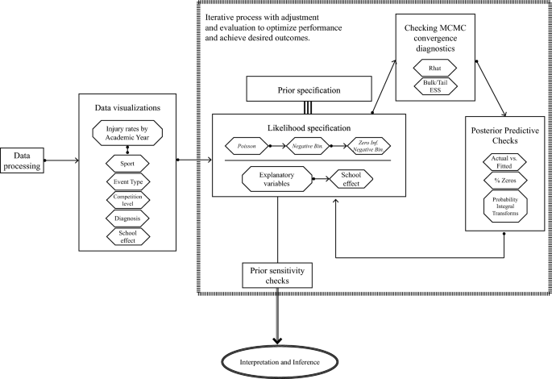

There’s a lengthy rundown on women athletes’ health and performance research. The news peg for it is the announcement of a new University of Indiana initiative, which gave me a chance to look at the bigger picture. Short answer, it’s in a much better place than it was in five or ten years ago. And there is a good chance that it could snowball, as the research raises more questions and technology advances new ways to answer those questions. You, the readers, can expect overviews like this as opportunities to come up to speed on crucial subjects materialize. I thank you for your attention.
Indiana University Female Sports Performance and Research Initiative
and a rundown of women athletes research
Indiana University recently announced a women athletes research initiative in partnership with Indiana Sports Corp and Pacers Sports & Entertainment. No dollar or grant-specific information was forthcoming but the program’s research committee co-chair, Katie Siek, is a revealing choice. Siek is professor of informatics and a human- and health-centered computer scientist. (The other co-chair of the research committee is Avinash Chandran, whose work is also discussed in this newsletter.) “Our whole goal here is to actually collect that data and help create interactive systems so that athletes can get better information to improve their health, and the health care system can better provide support for them,” Siek told the Indianapolis Record news organization.
Sports research has been gaining currency in the computing research community that focuses on human-centered computing and human-computer interaction. After a major conference workshop in 2024 sports researchers in the community published Grand Challenges in SportsHCI which stated that “we believe in the benefit of generating fundamental knowledge for SportsHCI more broadly to advance the field as a whole. To achieve this, we aim to identify the grand challenges in SportsHCI, which can help researchers and practitioners in developing a future research agenda.” University of Florida researchers published follow-up work last spring, Coach, Data Analyst, and Protector: Exploring Data Practices of Collegiate Coaching Staff that enlisted coaches for focus groups and found that “coaching staff selectively use data with the goal of balancing performance goals, athlete emotional well-being, and privacy.” Siek has studied prototypes of DaVinci Wearables’ technology that tracks female athlete physiology through biometrics (body temperature, galvanic skin response, body composition, cycle tracking) and assists athletes in reaching performance goals.
A sports research initiative based on computing is a new kind of interdisciplinary hub for this work. The Wu Tsai Human Performance Alliance based primarily at Stanford University is broadly based in medical and life science. The University of Michigan Human Performance & Sport Science Center resides in the School of Kinesiology. The FIFA Women’s Football Development Programme takes a soccer-centric approach. The International Olympic Committee has created the Female, woman, and girl Athlete Injury pRevention (FAIR) consensus.
Papers, conferences and spinouts are a good indicator for when a research initiative has hit critical mass and has impact. The FIFA Women’s group has a set of papers, many attempting to define benchmarks for elite women athletes, covering injury events and recovery parameters (links). The FAIR consensus has also produced a series of expert reviews on gender affects and prevention strategies for sport-related injury. The group also recently held the Female, Woman, and Girl Athlete Health and Safety Summit at the University of Calgary. The sixth editon of the Female Athlete Conference took place last spring in Boston and conference founder Kate Ackerman is the director of the new Women’s Health, Sports & Performance Institute, a translational sports medicine research center outside Boston. Stanford and Wu Tsai Human Performance Alliance will host its inaugural Female Athlete Research Meeting (FARM) in November.
Bayesian Injury Rate Estimation
a shift is underway from “frequentist” to “Bayesian” injury surveillance analysis
A couple of recent papers by Avinash Chandran announce a shift in the way that the NCAA does injury surveillance. Chandran describes the change as moving from a “frequentist” approach to a Bayesian approach in two papers: The Practical Value of Bayesian Inference in Describing the Epidemiology of Sports Injuries from Sports Medicine journal, and Bayesian methods for estimating injury rates in sport injury epidemiology from Injury Epidemiology journal. Chandran is the injury epidemiologist in charge of the NCAA Injury Surveillance Program for the Datalys Center, a non-profit collaborative research organization originally founded by the NCAA and the American College of Sports Medicine.
The difference between frequentist and Bayesian is almost as stark as analysis before and after the emergence of data science. Frequentist approaches center on counts and the traditional practice of statistical hypothesis tests, statistical significance and p-values. Bayesian approaches, in general, can take any and all prior information and then use that information to calculate posterior probabilities for the likelihood of statistical events. The frequentist approach is what it is, while the Bayesian approach iterates and evolves as meaningful prior information is applied. The change is a crucial progress step for injury surveillance and, potentially, for the NCAA.
Why you ask? Injury surveillance has its benchmark measurement, called injury rate, which in frequentist terms is the number of injury occurrences divided by the number of injury exposures. Chandran’s workflow for an injury rate Bayesian model looks like this. 
New information that will improve injury rate calculation are coming. Biometric, biomechanical and biomarker information now present a more in-depth picture of athletes’ ongoing physiology along with essential recovery and fatigue details. The rate-limiting step probably is not going to be the lag in completing the studies to merge the new information. More likely the greater lag will come from organizing the athletes’ data into coherent pathways for causal analysis of athletes’ injuries that can make the sum of all the investigations greater than its parts. The NCAA and its Sports Science Institute could champion the effort, and so could the federal government if it decides to play a role in managing college sports. Professional sports leagues could also provide a guiding hand, and as a result become a major beneficiary of the research.
Hot Hand and Talent Evaluation
extending the Hot Hand Fallacy to front office decision-making
The hot-hand fallacy has been a talking point since Amos Tversky and colleagues first identified the hot-hand in the 1980s.
The idea is simple. Recent success increases the likelihood of future success. The classic case, the one Tversky identified, is the basketball player who makes a few shots in a row, prompting both the player and teammates to expect the next shot to go in as well. The premise has been rebutted and amended by psychologists, economists and statisticians seeking ground truth for what is more accurately called a heuristic. That heuristic is often (but not always) a source of bad decisions and bad outcomes. A couple of recent articles prompted me to ask if the front office decision-making is as prone to hot-handedness as the players on the court, ice, pitch or field.
“The relationship between cash and winning in the NFL is complicated,” Mike Sando writes at the start of his September 12 article at The Athletic, Ranking NFL teams by spending: The boldest, most frugal and best bang for the buck. Front offices make personnel decisions with varying degrees of confidence and uncertainty. No organization gets every transaction right. But string together personnel wins, whether by draft, trade or free agency and it shows up as wins on the field. To believe that an organization’s decision process is more sound than lucky is to play the hot hand. When that happens the team-wide regression to the mean is imminent.
Some singular moves can turn out bo be force multipliers according to Sando’s analysis. The Chiefs pay less than market value for an All-World quarterback. The Rams have a superior coach known to do more with less. Some teams have a philosophy that raises their floor. The Eagles always choose to spend money on talent when given the opportunity. The Steelers spend lots more on defense than on offense.
“When one contention window closes, another one opens,” Dom Luszczyszyn and Scott Wheeler write at the start of their September 17 article, also at The Athletic, The NHL Contention Cycle: Where does each team stand going into 2025-26 and in the future? Like the NFL, teams are all over the place with some rising and others falling. The regression to the mean among NHL hockey teams is maybe more random, and therefore more unavoidable, than NFL football teams if you agree that title contention is cyclical.
Liverpool has held on to its elite position in the Premiere League despite significant squad turnover. This last article, originally from OneFootball’s Anfield Index blog, describes how the team’s sports science and medical department play a crucial role in talent evaluation. The athletes’ health and performance information was part of the team’s big-money decisions to extend Mohammad Sala’s contract (despite his advanced age) and to acquire Alexander Isak (despite his injury concerns). Another article, again by The Athletic, provides an in-depth analysis of Liverpool’s summer transfer ins and outs. Hidden in the details is how Will Spearman, director of research, championed the signing of Hugo Ekitike, comparing his age-grade statistics to Haaland and Mbappe. If there is an overarching philosophy, Liverpool shows a strong desire to stay young, “Every player Liverpool signed, with the exception of backup goalkeeper Freddie Woodman, is aged 25 or under.” Has the squad’s front office operators raised the team’s floor, or is the inevitable regression to the mean coming? Liverpool’s season is off to a fantastic start but it’s a long season ahead.